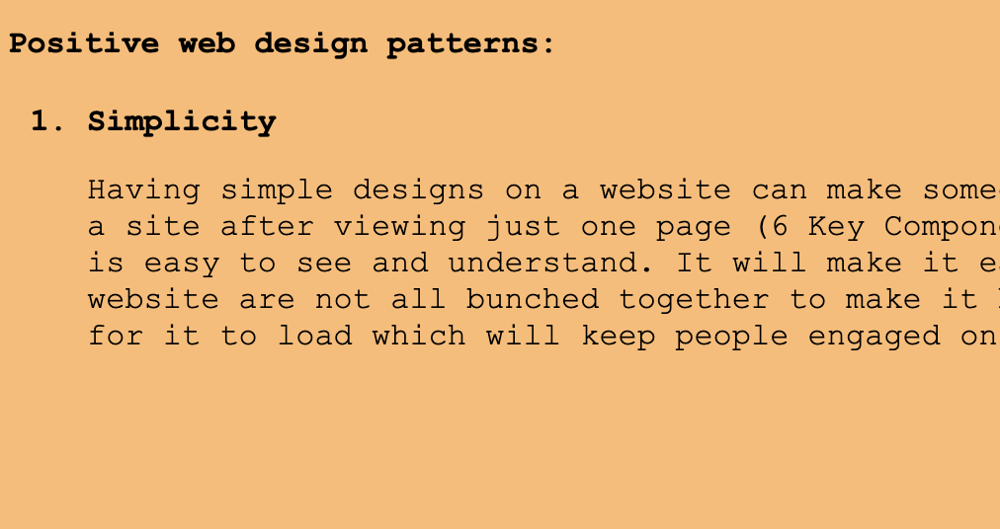
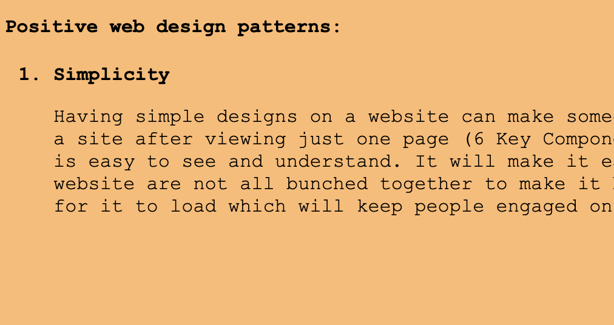

Who you are Interests Background Goals for the course Guiding questions for the course Your website set up


For my hyperlinks to the blog, home and research project, i should make these into larger buttons where it is easier for people to see that this is a link. At the moment, it is very small and if someone had impaired sight, it might be hard for them to realise that they can click on this and find out more about me.
I have set up so headings are in Ariel, sans-serif and the rest of the text that is in the body of the page, is in Courier New in the CSS class.
I used the website to check the contrast and found that I like this colour and the contrast is good and easy to read with black text.
 

I have created a header and different divisions for the main content of the page. As we can see all the content is in the middle of the page. I have set the images so they take up a portion of the main division content. This means when the page is resized, the images will also change size. The text also stays in the middle of the page as well. The navigation bar is at the top of the page, and is also resized with the size of the tab.

I really like it when you click it looks like you are pushing a physical button. So when you hover over the navigation bar it expands and when you click it, it goes smaller again. This helps with understanding what you are doing on a website instead of maybe missing where you are supposed to click.
Since I’m looking for a cyber security job, the green and black portrays the hacker theme so I decided to use that colour scheme to represent that a bit.
I have centred all the images and heading text, next step will be to make for the middle of the website so the text is above and under all the images.

Now I have set up in the blog page so there is the main content, which is in the middle, the navigation bar on the left and then the remaining space on the right.

I’ve decided that I like the navigation bar at the top better than on the left so next step will be to change that, so the navigation is in the header.
Now navigation bar is in the header of the website. Made a header division and made the height of the header 100 pixels.
I now made the navigation bar centred at the top of the website and made it green to keep with the theme. I have changed the writing to be in white to better contrast with the background for readability.
I like how Moritz has displayed his case studies in rectangle blocks, this makes it very clear where each case study starts and finished on the website and makes it easier to read. Having the rounded edges as well makes it feel modern and gives it depth.
I also like how he has a circular picture of him which goes well on the page.
I have made the navigation bar look like buttons now to make it more visible and now you can easily see where you need to click to change page.
Made it now so when you hover over the navigation bar it changes colour and becomes slightly bigger. Also made it go smaller again when we click on it to make it look like you are pressing it. This makes it much easier to see what you are doing on the website. You make not realise where the cursor is but this will make it easier for your eyes to catch where it is.
I have rearranged the home page to look a bit cleaner. Having my name bold and right in the middle and nicely contrast, makes it very eye catching and one of the first things your eyes look at when the page is loaded.
Put profile picture on the left but still needs a bit of work to make look better.
Have made it fit correctly but image does not scale with different sized tab.
Spent most of the day fixing up one of my old projects so I can add it on my portfolio and make sure it works correctly. Took the idea from Moritz portfolio and did my own spin on it.
added another project which is this portfolio.
Added my social media accounts in the top right corner
This is the CSS code for the social media to make them look nice on the screen. I made them a unordered list in the header of the index.html file. This makes it easier to control all of them at once instead of individually.
Added my experience and some writing along with it explaining what I do and have done. Also stating what
skills these jobs have taught me.
I have also made the projects and experiences slide in from the right and the left respectively.

Added skills section and write about non-technical and technical skills. These also slide in from the right when scrolling down to them.